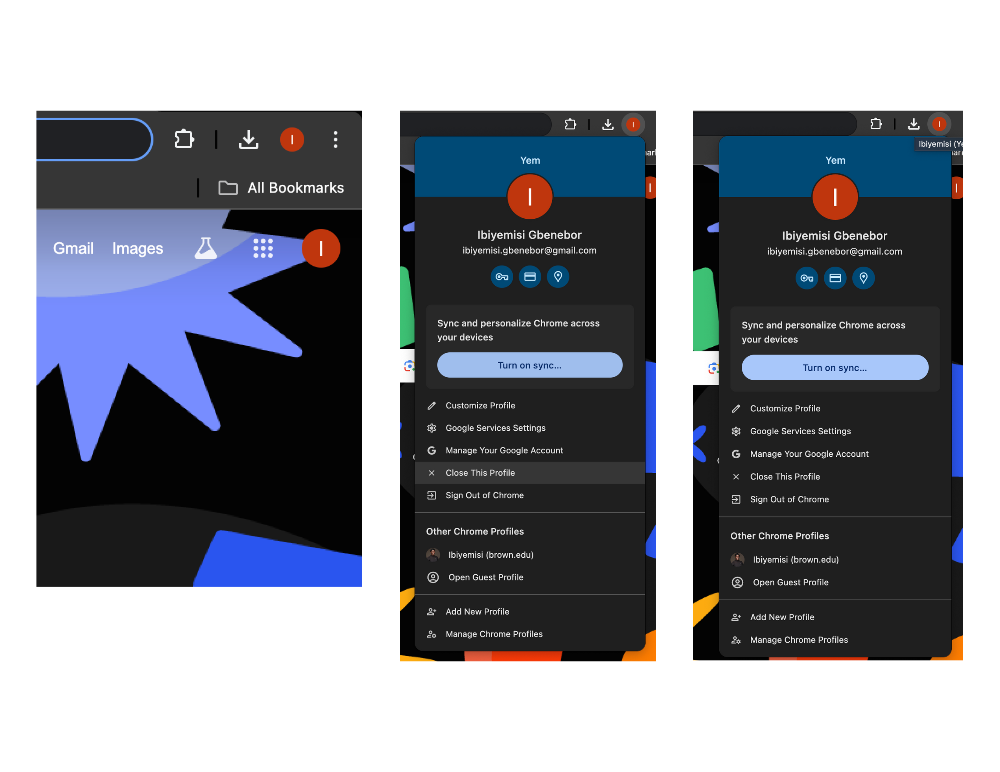
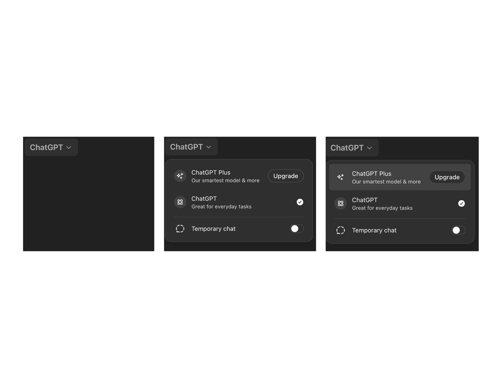
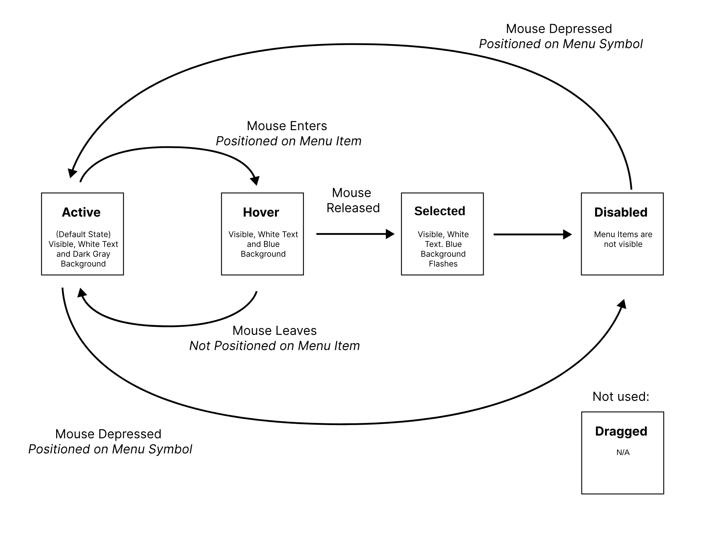
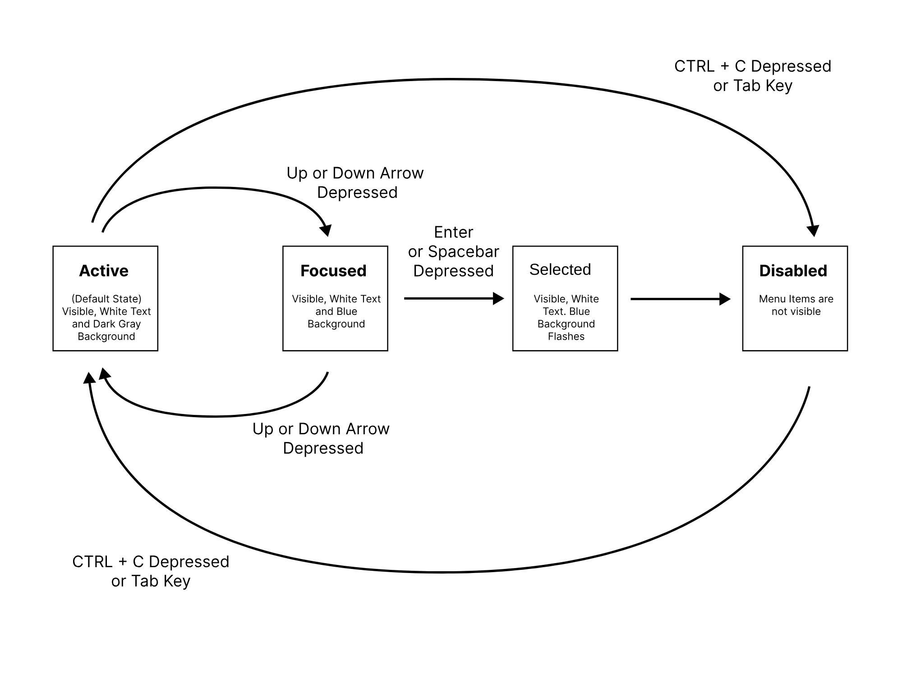
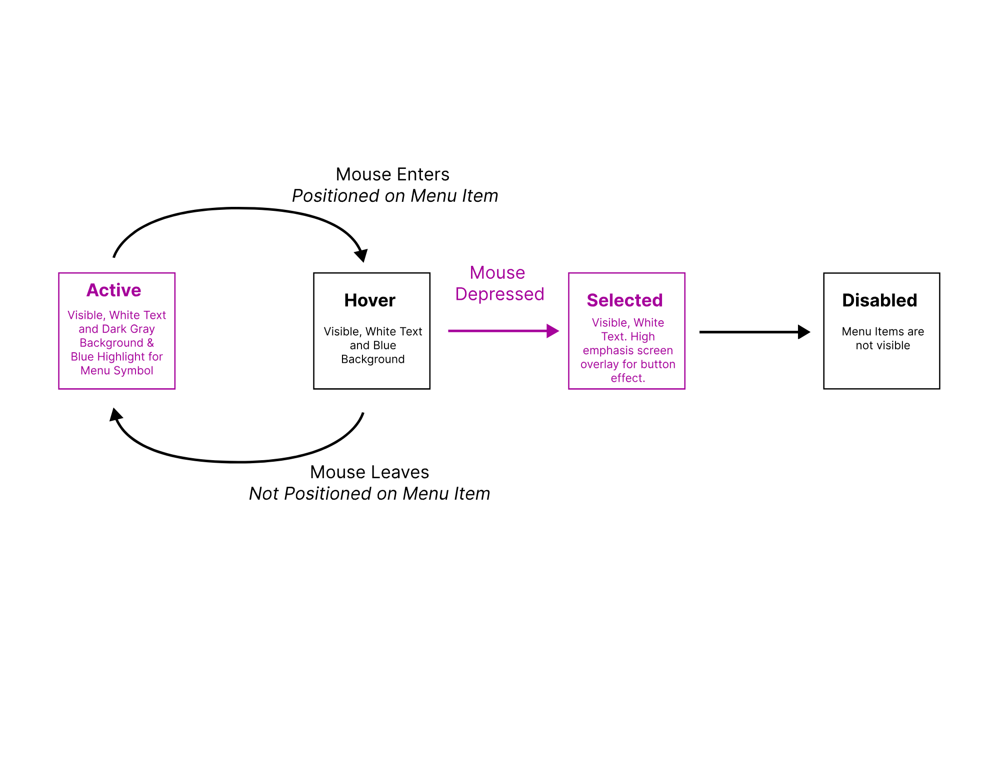
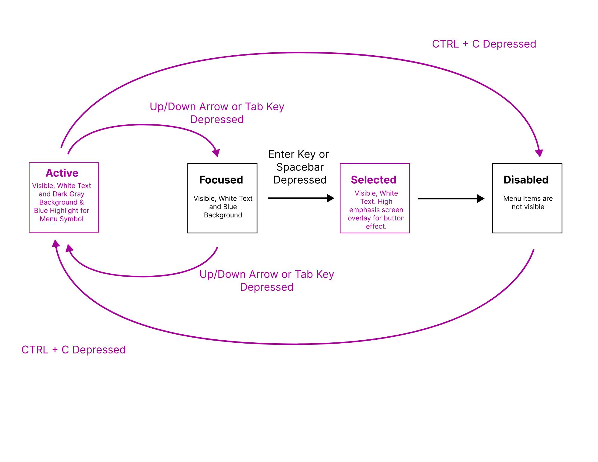

Initial Design
This section showcases the original dropdown menus from Google’s user profile menu, Apple’s system menu, and ChatGPT’s interface. By analyzing these designs, I identified key differences in interaction methods, accessibility features, and usability trade-offs across platforms.
Hover over images to enlarge view.



Initial Design Insights
User Interaction across States
Below, you’ll see two separate state models, each focusing on mouse and keyboard interactions. These diagrams help us visualize how a user navigates through different states when using a dropdown menu. This first diagram reflects the Apple Menu that I analyze previously, and the second diagram is an newly designed state model that targets specific tradeoffs.
Hover over images to enlarge view.
Initial State Model: Apple Menu


Updated State Model: Apple Menu


Updated Design Prototype

In this redesign, I introduced several state updates to improve learnability and memorability by using common interactions that may be familiar to the user in hopes that they will learn how to use the dropdown quickly.
- For mouse users:
- Menu items now select on press instead of release, creating a more immediate interaction similar to the other dropdown menus analyzed.
- The active state now features a blue outline when the menu is open, providing higher emphasis for mouse and keyboard users to indicate which menu item is open.
- The selected state mimics a pressed button rather than briefly flashing a blue background, enhancing memorability by implementing an affordance of what a button looks like after it is pressed.
- For keyboard users:
- Added Tab navigation between menu items, aligning with other implementations of dropdown menus that allow tabbing between items.
- The active and selected states for keyboard users have recieved the same update that mouse users are viewing.
Trade-offs:
These changes introduce a trade-off in efficiency. Mouse users now need to be more precise,
as accidental clicks can lead to unintended selections. For keyboard users, while Tab navigation improves
usability, it may slow down interaction in large menus where arrow keys alone would have been a quicker way to
navigate. These trade-offs highlight the balance between learnability, memorability, and efficiency, ensuring
a streamlined experience at the cost of some interaction accuracy and speed.